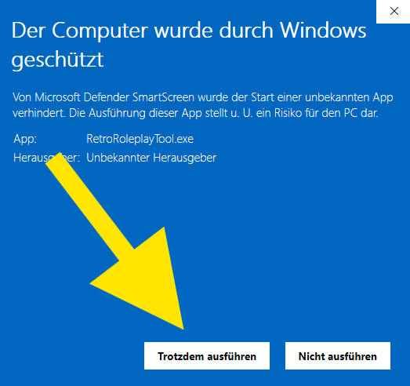

1Auf „Weitere Informationen“ klicken

Retro Roleplay Tool
Das Programm ist nicht digital signiert, deshalb meldet sich Windows. So startest du es trotzdem:

Danach startet das Tool. Die aktuelle Version gibt es nur unter github.com/cryd-s/retro-roleplay-tool.